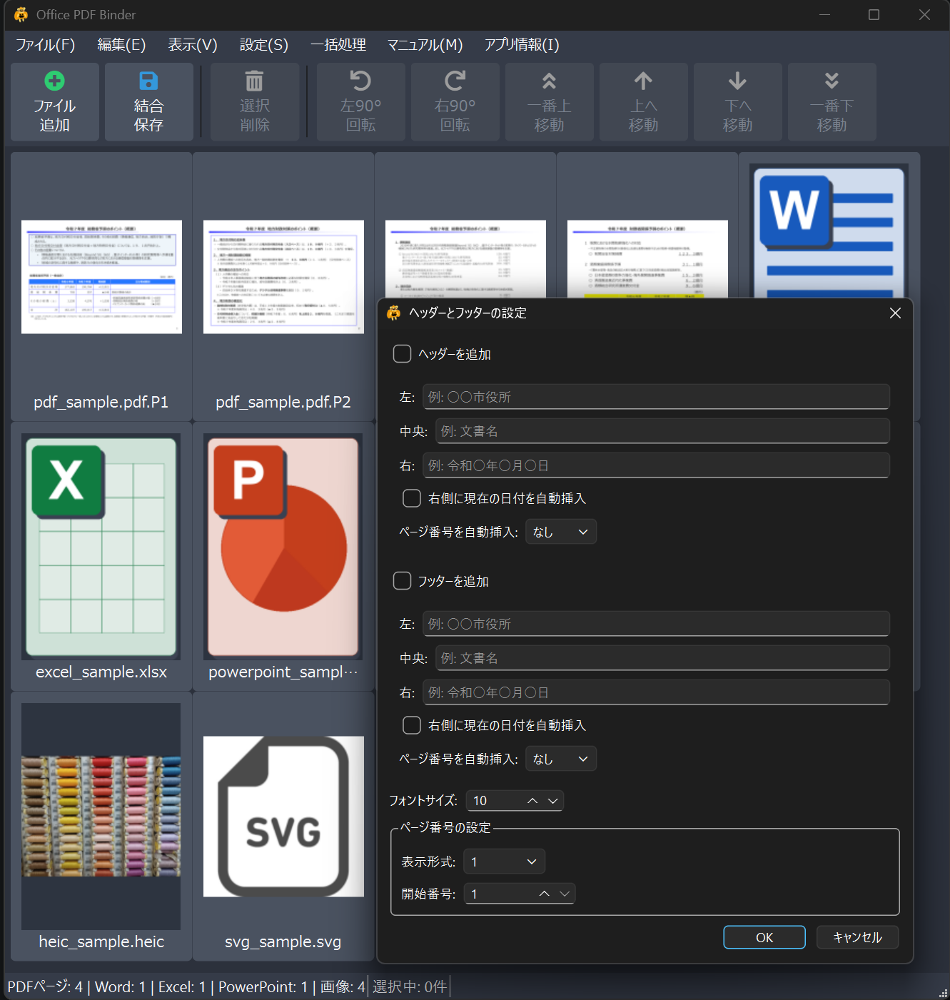

Office PDF Binder は、複数の PDF / Office ファイルを 1 つの PDF にまとめ、ページ単位で並べ替え・削除・回転ができる Windows デスクトップアプリです。
PDF、Word、Excel、PowerPoint の資料をまとめて、提出用・共有用の PDF を作る作業を効率化するために作成しました。
対応拡張子:
.pdf / .docx / .doc / .docm / .xlsx / .xls / .xlsm / .pptx / .ppt / .pptm
GitHub Releases から最新版のインストーラーをダウンロードしてください。
OfficePDFBinder_Setup_1.2.0.exe
インストーラーで導入すると、アプリ本体、ライセンス文書、ユーザーマニュアル、ソースコード一式がインストール先に配置されます。
Ctrl+O、またはアプリ画面へのドラッグ&ドロップで追加できます。Delete キーで削除、Ctrl+A ですべて選択できます。ファイル → 新規 で、現在のリストをクリアして初期状態に戻せます。表示 → しおり で、しおりパネルの表示/非表示を切り替えます。設定 → ファイルごとにしおりを自動作成 で、ファイル先頭ページの自動しおりを切り替えられます。設定 → 保存したPDFを開くときにしおりを表示 で、保存PDFを開いたときにPDFビューアのしおりパネルを表示するかを切り替えられます。表示 → 拡大 / 縮小 / ウィンドウに合わせる で表示倍率を変更できます。Ctrl + ホイールでもズームできます。Ctrl+0 で標準表示に戻せます。設定 → ヘッダーとフッター で、保存時に追加するヘッダーとフッターを設定できます。
ファイル → 選択ページをPDFとして書き出し で、選択したページを書き出せます。ファイル → 選択ページを画像として書き出し で、選択したPDFページを JPEG（300dpi）として書き出せます。ファイル → 名前を付けて保存 または Ctrl+S で結合PDFを保存します。ページを右クリックすると、選択状態に応じて以下の操作ができます。
| 操作 | ショートカット |
|---|---|
| 新規 | Ctrl+N |
| ファイル追加 | Ctrl+O |
| 保存 | Ctrl+S |
| 終了 | Ctrl+Q |
| 全選択 | Ctrl+A |
| 削除 | Delete |
| ズームイン / アウト | Ctrl + + / - または Ctrl + ホイール |
| ウィンドウに合わせる | Ctrl+0 |
| ヘッダーとフッター | Ctrl+H |
| 元に戻す / やり直し | Ctrl+Z / Ctrl+Y |
開発時は、OfficePDFBinder 用の Python 環境を有効化して作業します。
確認済みの開発環境:
主な依存関係:
Python パッケージは以下でインストールできます。
pip install -r requirements.txt
テスト用パッケージを追加し、pytest を実行するには次を使用します。
pip install -r requirements-dev.txt
python -m pytest
自動テストの内訳と、Office・インストーラーを含む手動確認項目は
TESTING.md を参照してください。
ビルド操作は build.ps1 に統一しています。本体を変更せず、既存の dist から説明書とインストーラーだけを再生成する場合は、次を実行します。
.\build.ps1 -Mode Package
本体変更後の開発確認では、Nuitka中間生成物を再利用する高速ビルドを実行します。
.\build.ps1 -Mode Fast
公開用の最終確認では、クリーンビルドを実行します。
.\build.ps1 -Mode Release
FastとReleaseは、配布用のdist、ポータブル版、インストーラーを作成します。PackageはNuitkaを実行せず、既存のdistを使ってインストーラーだけを再生成します。
ビルドが完了すると、インストーラーと制限環境向けポータブル版（フォルダー、ZIP）が Output/ に出力されます。Nuitkaによるアプリ本体のビルドは1回だけです。
各モードは必要に応じて、アプリ内マニュアル用の README.html と、AGPL対応のために同梱する source.zip も再生成します。
制限環境向けポータブル版には、実行ファイルと同じフォルダーに OfficePDFBinder.restricted-portable が同梱されます。このファイルがある場合、AppDataへの設定保存とホームフォルダーへのデバッグログ出力を行わず、Office変換用の一時PDFは変換元Officeファイルと同じフォルダーに作成して処理後に削除します。マーカーファイルを削除すると通常モードになるため、配布時は削除しないでください。
Gitリポジトリには、ソースコード、ビルドスクリプト、ライセンス文書、READMEを含めます。
以下はGit管理対象外です。
source.zip配布用インストーラーは、GitHub Releases の Assets として公開します。
LICENSE.txt）NOTICE.txt）Copyright (C) 2026 Takeshi Kashiwagi